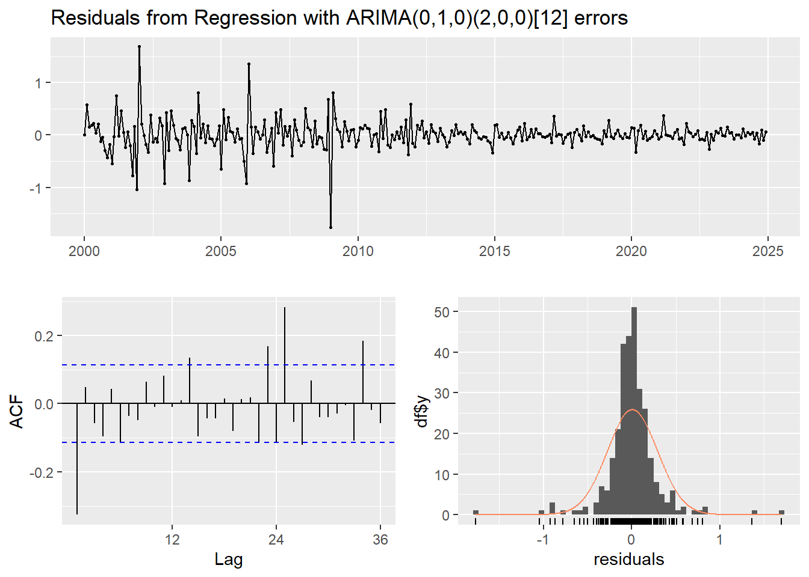
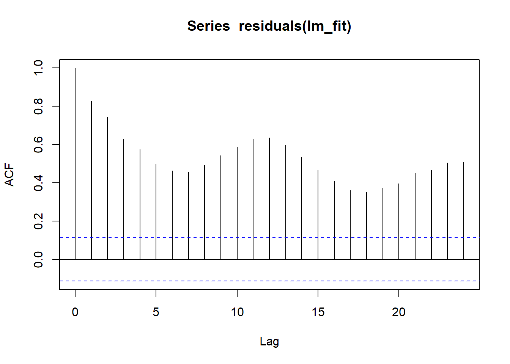
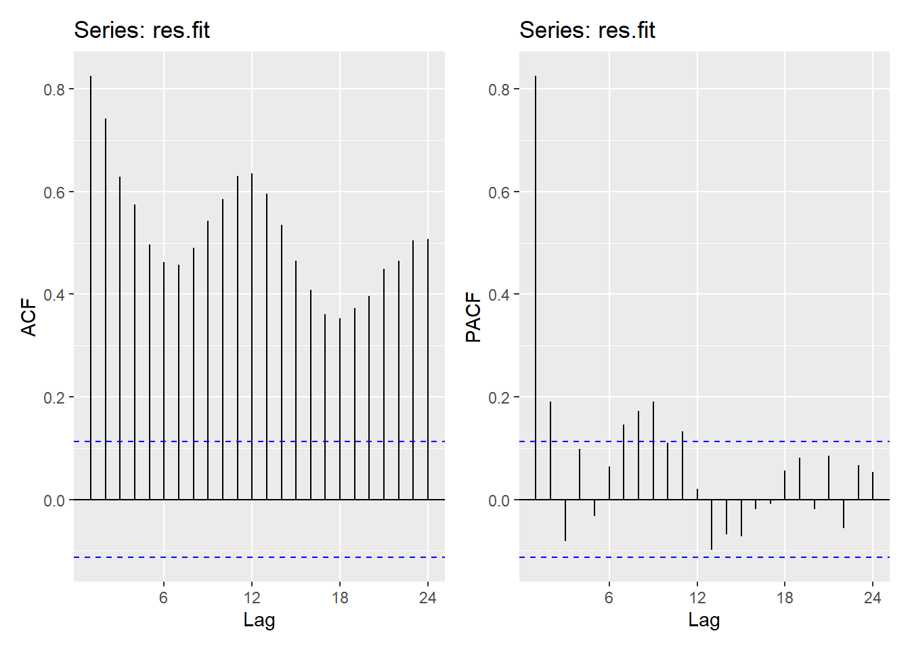
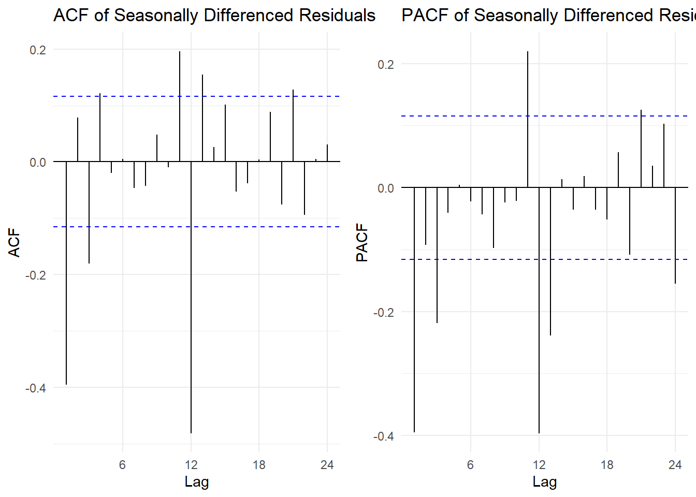
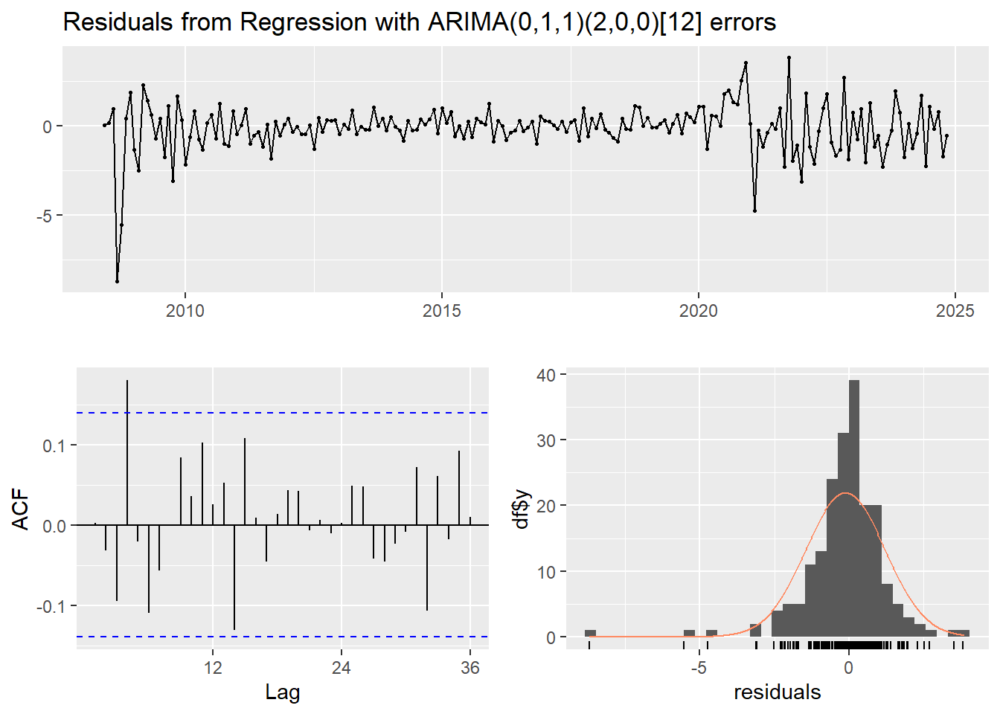
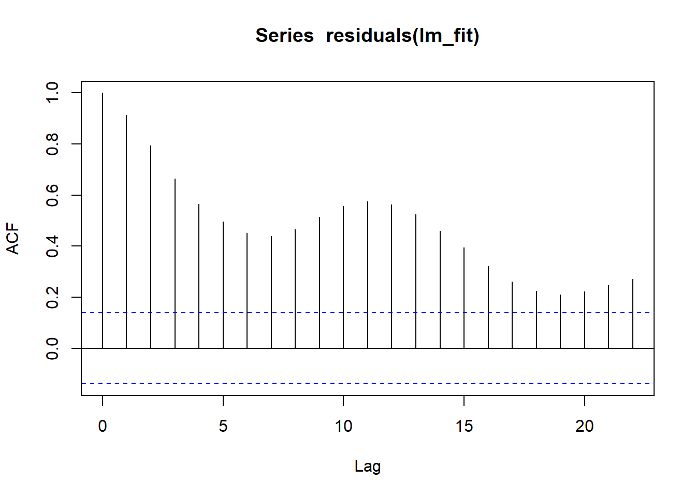
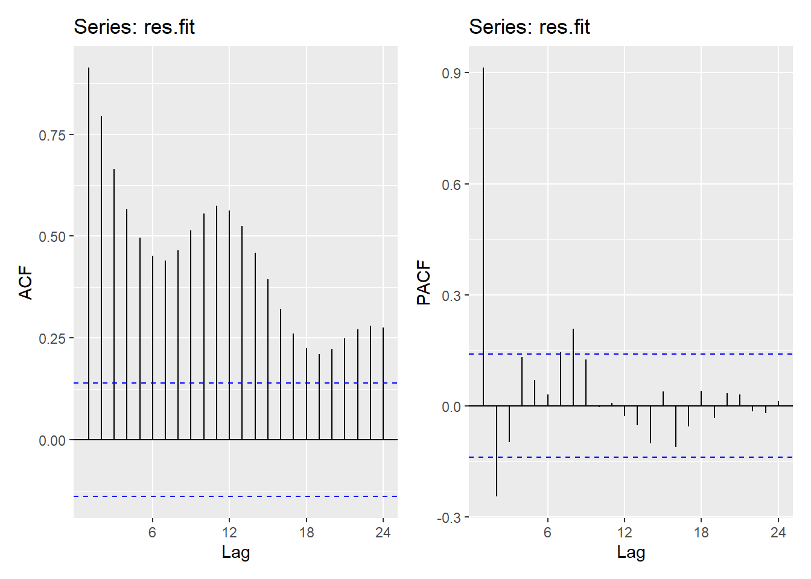
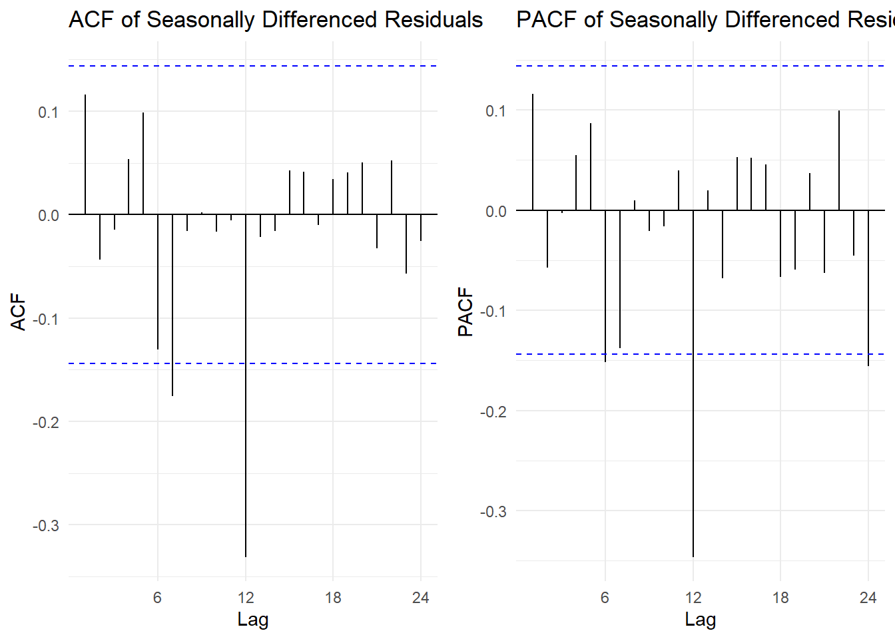
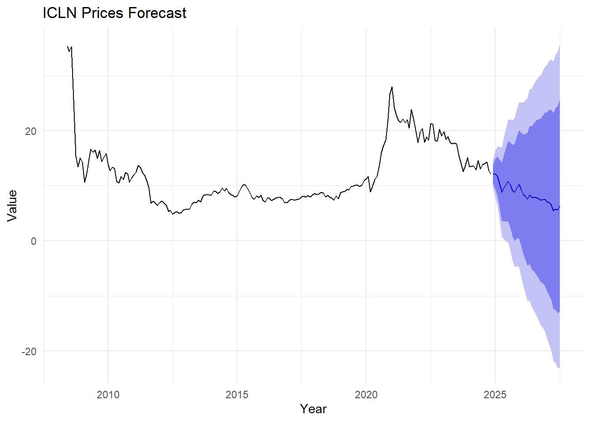
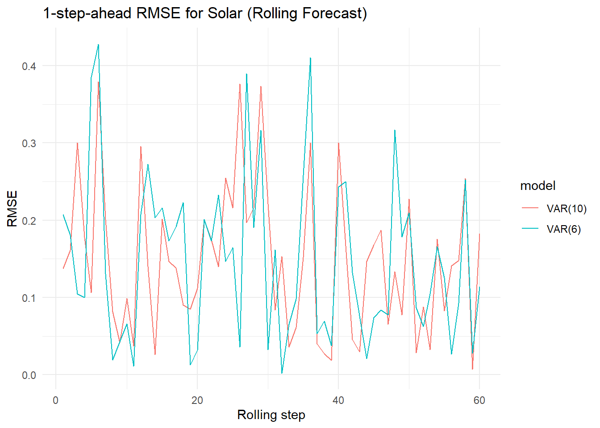

1. Drivers of Energy Transition – The Tripartite Effect of Price, Climate, and Policy
Energy transition is both a result of technological evolution and a dynamic process driven by the combined effects of economics, climate, and policy. Numerous studies have shown that fossil fuel prices (such as crude oil and natural gas) have a significant impact on the development of renewable energy: when oil or natural gas prices rise, the relative cost of fossil fuels increases, enhancing the relative competitiveness of clean energy, thereby driving growth in renewable power generation or related investment. Simultaneously, climate and weather variables (temperature, irradiance, degree-days) directly affect the short-term output of renewable power generation: solar power is affected by solar irradiance and temperature (high temperatures may slightly reduce photovoltaic efficiency), while wind power is affected by seasonal wind speeds and extreme weather. Finally, policy (subsidies, feed-in tariffs, carbon prices) is a structural driver: policy shocks typically produce lasting trend changes or step responses.
2. Price-Output/Investment Transmission Mechanism (Substitution and Demand Channels)
Literature divides price transmission into supply-side and demand-side mechanisms: Price increases make renewable energy more attractive by raising the cost of fossil fuel power generation (or the marginal cost of fuel power generation) (substitution effect); another channel is the financial market: oil and gas prices affect the earnings and stock performance of related energy companies, which in turn affects ETFs or capital flows (ICLE, XLE, etc.). These financial variables then feed back into investment and project construction decisions.
3. Application of Time Series and Multivariate Methods in Energy Research
In empirical methods, researchers widely use ARIMAX/SARIMAX (modeling a single response variable under exogenous shocks) to characterize the short-term impact of exogenous variables such as weather/prices on power generation or prices; while VAR/VECM/VARMA are used to study the dynamic interactions between several endogenous variables (e.g., how wind, solar, natural gas, and coal power generation interact), and to conduct impact response analysis (IRFs) and variance decomposition to identify shock sources and propagation paths. Model selection typically considers the seasonality, trend, and cointegration of time series data.
4. Financial Market Perspective: ETFs and Energy Transition Signals
ETFs (such as clean energy ETFs vs. traditional energy ETFs) are often used as market signals for the energy transition. Empirical research shows that energy ETFs are sensitive to oil and gas prices, macroeconomic and policy news, and can reflect investors’ expectations for the transition prospects. Therefore, using ETFs as financial indicators can supplement the dimension of market expectations that cannot be directly captured by physical electricity generation sequences.
Key Research Questions
Does the price of fossil fuels drive the growth of solar power generation through substitution effects?
What are the immediate or lagged responses of solar power if WTI or HH rises? (Examine the β parameter and impulse response)
What are the short-term and seasonal effects of weather variables (temp or degree-days) on solar output? Are there nonlinearities (e.g., excessively high temperatures reduce efficiency)?
It is necessary to examine the linear/quadratic terms of temp, as well as the seasonal interaction term.
Are there substitution or complementarity relationships in the power generation structure (wind, solar, coal, natural gas)? How do shocks (e.g., rising natural gas prices) propagate between different energy sources?
VAR can be used to obtain the impulse response function (IRF) and variance decomposition to answer these questions.
How do financial markets (ICLE vs XLE) reflect expectations of energy transition? Are these ETFs leading/lagging relationships with actual power generation data or fuel prices?
VAR can be used to test Granger causality and interaction.
Have policies or structural events altered the long-term relationships between energy variables (e.g., trend abrupt changes or changes in cointegration structures)?
Examine structural breakpoints and incorporate policy dummy variables to quantify policy effects.
Forecasting: How does the ARIMAX model perform in short-term solar forecasting, considering the uncertainty of exogenous variables? Is it a significant improvement compared to using an autoregressive model alone?
Test model stability using time series cross-validation (tsCV) and RMSE comparisons.
(1) ARIMAX: Solar power generation ~ temperature + oil prices + gas prices
The relationship between temperature (temp) and solar power generation: Solar power generation is closely related to temperature and irradiance, but extreme high temperatures can reduce the efficiency of photovoltaic panels.
The substitution effect of fossil fuel prices on clean energy: When oil prices (WTI) or natural gas prices (HH) rise, clean energy (especially wind and solar power) becomes more economically attractive.
Code
data_all <- solar_df %>%full_join(df_temp, by ="Date") %>%full_join(wti, by ="Date") %>%full_join(df_n, by ="Date") %>%arrange(Date)# Create individual plots for each variable with y-axis labelsp1 <-plot_ly(data_all, x =~Date, y =~Solar, type ='scatter', mode ='lines', name ="Solar Electricity Generation") %>%layout(yaxis =list(title ="Value"))p2 <-plot_ly(data_all, x =~Date, y =~Monthly_Anomaly, type ='scatter', mode ='lines', name ="Global Average Temperature Anomaly") %>%layout(yaxis =list(title ="Temperature (C)"))p3 <-plot_ly(data_all, x =~Date, y =~WTI, type ='scatter', mode ='lines', name ="WTI Oil price") %>%layout(yaxis =list(title ="Price"))p4 <-plot_ly(data_all, x =~Date, y =~HH, type ='scatter', mode ='lines', name ="Henry Hub Natural Gas price") %>%layout(yaxis =list(title ="Price"))# Combine the individual plots into a single figure with subplots and y-axis labelsfinal_plot <-subplot(p2, p3, p4, p1, nrows =4, shareX =TRUE, titleX =TRUE) %>%layout(title ="Time Series of Solar power generation, temperature, and oil and gas prices",yaxis =list(title ="Value"), yaxis2 =list(title ="Temperature (C)"), yaxis3 =list(title ="Price"),yaxis4 =list(title ="Price"),xaxis =list(title ="Year") )final_plot
Series: ts_solar
Regression with ARIMA(0,1,0)(2,0,0)[12] errors
Coefficients:
sar1 sar2 ts_anomaly ts_wti ts_np
0.7384 0.0343 -0.2005 -0.0035 0.1222
s.e. 0.0623 0.0655 0.1178 0.0024 0.2867
sigma^2 = 0.0832: log likelihood = -55.29
AIC=122.58 AICc=122.87 BIC=144.78
Training set error measures:
ME RMSE MAE MPE MAPE MASE
Training set 0.007005674 0.2855417 0.1738749 -0.5963215 5.174797 0.5206869
ACF1
Training set -0.3249882
Code
checkresiduals(fit_auto)

Ljung-Box test
data: Residuals from Regression with ARIMA(0,1,0)(2,0,0)[12] errors
Q* = 75.679, df = 22, p-value = 8.212e-08
Model df: 2. Total lags used: 24
The auto.arima() fits a Regression with (0,1,0)(2,0,0)[12] errors. The ACF plot and Ljung–Box test all indicate that the model does not fully capture the seasonal structure.
Call:
lm(formula = Solar ~ Monthly_Anomaly + WTI + HH, data = data_all)
Residuals:
Min 1Q Median 3Q Max
-5.4115 -1.0282 0.0462 1.2208 4.0037
Coefficients:
Estimate Std. Error t value Pr(>|t|)
(Intercept) -4.819000 0.880666 -5.472 9.49e-08 ***
Monthly_Anomaly 7.017950 0.397215 17.668 < 2e-16 ***
WTI 0.009648 0.004100 2.353 0.0193 *
HH 1.839612 0.389946 4.718 3.68e-06 ***
---
Signif. codes: 0 '***' 0.001 '**' 0.01 '*' 0.05 '.' 0.1 ' ' 1
Residual standard error: 1.585 on 296 degrees of freedom
Multiple R-squared: 0.5961, Adjusted R-squared: 0.592
F-statistic: 145.6 on 3 and 296 DF, p-value: < 2.2e-16
From the regression model, all variables are statistically significant, indicating that WTI oil price, natural gas price and temperature have a meaningful impact on total solar electricity generation. This suggests that changes in these factors directly influence solar electricity generation.
Code
acf(residuals(lm_fit))

Moreover, the residuals exhibit a high correlation, indicating significant serial correlation that remains unexplained. This suggests that traditional machine learning models may struggle to fully capture the underlying temporal patterns in these time series variables.
Code
res.fit <-ts(residuals(lm_fit), frequency =12)p1 <-ggAcf(res.fit)p2 <-ggPacf(res.fit)(p1 | p2)

Code
library(patchwork)first_diff <-diff(res.fit) seasonal_diff <-diff(first_diff, lag =12)###### Plot ACF and PACF for the Differenced Series ######p1 <-ggAcf(seasonal_diff) +ggtitle("ACF of Seasonally Differenced Residuals") +theme_minimal()p2 <-ggPacf(seasonal_diff) +ggtitle("PACF of Seasonally Differenced Residuals") +theme_minimal()# Display plotsgridExtra::grid.arrange(p1, p2, ncol =2)

This series appears closer to weak stationarity. The ACF plot shows clear autocorrelations at lags q = 0,1,2,3 and Q = 1,2.
Additionally, both first-order differencing (d = 1) and seasonal differencing (D = 1) have been applied to the data.
The PACF plot shows clear autocorrelations at lags p = 0,1,2,3 and P = 0,1,2.
Code
###### Define SARIMA Model Comparison Function ######SARIMA.c <-function(p_range, d_range, q_range, P_range, D_range, Q_range, data) {# Set seasonal period s <-12# Initialize results storage results_list <-list()# Iterate over parameter combinationsfor (p in p_range) {for (d in d_range) {for (q in q_range) {for (P in P_range) {for (D in D_range) {for (Q in Q_range) {if (p + d + q + P + D + Q <=10) { result <-tryCatch({ model <-Arima( data,order =c(p, d, q),seasonal =list(order =c(P, D, Q), period = s) )c(p, d, q, P, D, Q,AIC(model),BIC(model), model$aicc) }, error =function(e) {c(p, d, q, P, D, Q, NA, NA, NA) }) results_list[[length(results_list) +1]] <- result } } } } } } }# Convert results to a tidy data frame results_df <-as.data.frame(do.call(rbind, results_list))colnames(results_df) <-c("p", "d", "q", "P", "D", "Q", "AIC", "BIC", "AICc")return(results_df)}###### Run SARIMA Model Comparison ######output <-SARIMA.c(p_range =0:3, q_range =0:3, d_range =1, D_range =1, P_range =0:2, Q_range =0:2, data = res.fit)###### Identify Models with Minimum AIC and BIC ######minaic <- output[which.min(output$AIC), ]minbic <- output[which.min(output$BIC), ]###### Display Best Models Based on AIC and BIC ######print(minaic)
p d q P D Q AIC BIC AICc
96 2 1 2 1 1 2 729.6844 758.9602 730.2023
The model ARIMA(2,1,2)x(1,1,2)[12] works siginificantly better than ARIMA(0,1,0)x(2,0,0)[12] due to the lower AIC, BIC, and AICc numbers.
###### Extract and Print Model Diagnostics ######cat("### ARIMA(0,1,0)x(2,0,0)[12] ###\n")
### ARIMA(0,1,0)x(2,0,0)[12] ###
Code
extract_model_diagnostics(model_output_2)
Coefficients:
Estimate SE t.value p.value
sar1 0.1181 0.0579 2.0389 0.0423
sar2 0.1333 0.0592 2.2503 0.0252
constant -0.0069 0.0691 -0.0993 0.9210
sigma^2 estimated as 0.8323154 on 296 degrees of freedom
AIC = 2.68328 AICc = 2.683552 BIC = 2.732784
Using corss validation, we can confirm that ARIMA(0,1,0)x(2,0,0)[12] is the better model since is stays at a lower RMSE for the majority of the time in the plot below.
Code
y <-as.numeric(res.fit)n <-length(y)k <-92# initial training sizermse1 <-matrix(NA, 52, 4)rmse2 <-matrix(NA, 52, 4)for (i in1:52) {# training = first (k+i-1) observations xtrain <- y[1:(k+i-1)]# test = next 4 observations xtest <- y[(k+i):(k+i+3)]# fit ARIMA models fit <-Arima(ts(xtrain, frequency=12),order=c(2,1,2),seasonal=list(order=c(1,1,2), period=12)) fcast <-forecast(fit, h=4) fit2 <-Arima(ts(xtrain, frequency=12),order=c(0,1,0),seasonal=list(order=c(2,0,0), period=12)) fcast2 <-forecast(fit2, h=4)# ensure xtest length = 4if (length(xtest)==4&&length(fcast$mean)==4) { rmse1[i,] <-sqrt((fcast$mean - xtest)^2) rmse2[i,] <-sqrt((fcast2$mean - xtest)^2) }}# final RMSEcolMeans(rmse1, na.rm=TRUE)
[1] 0.8445689 1.0799366 1.2584144 1.3675548
Code
colMeans(rmse2, na.rm=TRUE)
[1] 0.7018249 0.9072551 1.0266301 1.0813421
Code
##### RMSE Plot using Plotly ###### Create a dataframe for RMSE values by quarterqr <-c("Q1", "Q2", "Q3", "Q4")rmse11 <-data.frame(Quarter = qr, RMSE =colMeans(rmse1, na.rm =TRUE))rmse22 <-data.frame(Quarter = qr, RMSE =colMeans(rmse2, na.rm =TRUE))# Generate an interactive RMSE comparison plotplot_ly() %>%add_lines(data = rmse11, x =~Quarter, y =~RMSE, color =I("blue"), name ="RMSE1: ARIMA(2,1,2)x(1,1,2)[12]") %>%add_lines(data = rmse22, x =~Quarter, y =~RMSE, color =I("red"), name ="RMSE2: ARIMA(0,1,0)x(2,0,0)[12]") %>%layout(title ="Cross-Validation RMSE for GDP Forecasting",xaxis =list(title ="Quarter"),yaxis =list(title ="RMSE"),legend =list(title ="Model") )
Code
# Define the dependent variable (TotalVehicleSales)y <- ts_solar# Define external regressors (all variables except TotalVehicleSales)xreg <-cbind(ts_anomaly, ts_wti, ts_np)# Fit ARIMA(2,1,0)x(0,0,1)[12] with external regressorsfit <-Arima(y, order =c(0,1,0), seasonal =list(order =c(2,0,0), period =12), xreg = xreg)#fit1 <- Arima(y, order = c(2,1,2), seasonal = list(order = c(1,1,2), period = 12), xreg = xreg)# Display model summarysummary(fit)
Series: y
Regression with ARIMA(0,1,0)(2,0,0)[12] errors
Coefficients:
sar1 sar2 ts_anomaly ts_wti ts_np
0.7384 0.0343 -0.2005 -0.0035 0.1222
s.e. 0.0623 0.0655 0.1178 0.0024 0.2867
sigma^2 = 0.0832: log likelihood = -55.29
AIC=122.58 AICc=122.87 BIC=144.78
Training set error measures:
ME RMSE MAE MPE MAPE MASE
Training set 0.007005674 0.2855417 0.1738749 -0.5963215 5.174797 0.5206869
ACF1
Training set -0.3249882
This model successfully captured the long-term upward trend in solar power generation and accurately reproduced the monthly seasonal patterns. Short-term forecasts have high reliability, while medium- and long-term forecasts exhibit reasonable confidence interval expansion, reflecting the uncertainties in the energy sector. Although the ARIMA model slightly exaggerates the long-term growth slope, the overall trend direction is highly consistent with the structural changes in the US energy market. Therefore, this forecast can serve as a reliable baseline for future solar power generation growth.
Code
# Fit ARIMA model to each external regressortmp_fit <-auto.arima(xreg[, "ts_anomaly"])#summary(FinR_fit)ftmp <-forecast(tmp_fit, h =32) # Forecast next 32 periodswti_fit <-auto.arima(xreg[, "ts_wti"])#summary(Imp_fit)fwti <-forecast(wti_fit, h =32)hh_fit <-auto.arima(xreg[, "ts_np"])#summary(CPI_fit)fhh <-forecast(hh_fit, h =32)
Code
# Create future external regressor matrix using forecasted valuesfxreg <-cbind(Temperature = ftmp$mean, WTI = fwti$mean, HH = fhh$mean)# Fit ARIMA(2,0,2)x(0,0,1)[12] with external regressorsfit <-Arima(y, order =c(0,1,0), seasonal =list(order =c(2,0,0), period =12), xreg = xreg)# Forecast TotalVehicleSales using future external regressorsfcast <-forecast(fit, xreg = fxreg, h =32)# Plot the forecastautoplot(fcast) +ggtitle("Solar Electricity Net Generation Forecast") +xlab("Year") +ylab("Value") +theme_minimal()
Fuel Prices → Substitution/Competition Channel for Clean Energy: When fossil fuel prices (especially natural gas or oil) rise, the costs for fossil power generation and related companies increase, making renewable energy (and related listed companies) more economically attractive, thereby boosting their valuations and ETF performance.
Traditional Energy ETFs (XLE) as a Transmission of Industry Sentiment/Risk Premium: XLE represents the market performance of the traditional energy sector, reflecting industry prosperity, capital flows, and investor risk appetite. The correlation between ICLN and XLE can capture “sector rotation” or the market transmission of funds from traditional energy to clean energy. If the two move in opposite directions, it indicates a substitution relationship between fund flows and market expectations.
common_start <-c(2008, 6)common_end <-c(2024, 11)ts_icln <-window(ts_icln, start = common_start, end = common_end)ts_xle <-window(ts_xle, start = common_start, end = common_end)ts_wti <-window(ts_wti, start = common_start, end = common_end)ts_np <-window(ts_np, start = common_start, end = common_end)
Code
# Create individual plots for each variable with y-axis labelsp1 <-plot_ly(data_all, x =~Date, y =~ICLN, type ='scatter', mode ='lines', name ="Renewable Energy ETF (ICLN)") %>%layout(yaxis =list(title ="Price"))p2 <-plot_ly(data_all, x =~Date, y =~XLE, type ='scatter', mode ='lines', name ="Energy Select Sector SPDR Fund (XLE)") %>%layout(yaxis =list(title ="Price"))p3 <-plot_ly(data_all, x =~Date, y =~WTI, type ='scatter', mode ='lines', name ="WTI Oil price") %>%layout(yaxis =list(title ="Price"))p4 <-plot_ly(data_all, x =~Date, y =~HH, type ='scatter', mode ='lines', name ="Henry Hub Natural Gas price") %>%layout(yaxis =list(title ="Price"))# Combine the individual plots into a single figure with subplots and y-axis labelsfinal_plot <-subplot(p2, p3, p4, p1, nrows =4, shareX =TRUE, titleX =TRUE) %>%layout(title ="Time Series of ICLN, XLE, WTI and HH price",yaxis =list(title ="Price"), yaxis2 =list(title ="Price"), yaxis3 =list(title ="Price"),yaxis4 =list(title ="Price"),xaxis =list(title ="Year") )final_plot
Series: ts_icln
Regression with ARIMA(0,1,1)(2,0,0)[12] errors
Coefficients:
ma1 sar1 sar2 ts_xle ts_wti ts_np
0.3556 -0.0975 -0.0040 0.1480 0.0094 1.4393
s.e. 0.0688 0.0940 0.0955 0.0256 0.0180 0.8832
sigma^2 = 1.837: log likelihood = -336.51
AIC=687.02 AICc=687.62 BIC=710.01
Training set error measures:
ME RMSE MAE MPE MAPE MASE
Training set -0.1154497 1.331195 0.8690732 -0.8413407 6.832749 0.281648
ACF1
Training set 0.002878453
Code
checkresiduals(fit_auto)

Ljung-Box test
data: Residuals from Regression with ARIMA(0,1,1)(2,0,0)[12] errors
Q* = 24.12, df = 21, p-value = 0.2873
Model df: 3. Total lags used: 24
The auto.arima() fits a Regression with ARIMA(0,1,1)(2,0,0)[12] errors. It shows well-behaved residuals. - The residual time series fluctuates randomly around zero with no noticeable pattern. - The ACF plot does not exhibit significant autocorrelation, and most spikes remain within the 95% confidence bounds, indicating that the model successfully captures the serial dependence in the data. - The Ljung–Box test (p = 0.2873) confirms that we cannot reject the null hypothesis of no autocorrelation, meaning the residuals are consistent with white noise. - Therefore, this ARIMA model adequately accounts for the strong temporal dependence in the series
Call:
lm(formula = ICLN ~ XLE + WTI + HH, data = data_all)
Residuals:
Min 1Q Median 3Q Max
-9.3476 -3.9395 -0.8801 2.4945 18.6202
Coefficients:
Estimate Std. Error t value Pr(>|t|)
(Intercept) -9.38426 3.69562 -2.539 0.0119 *
XLE -0.02889 0.02691 -1.073 0.2844
WTI 0.03615 0.01855 1.948 0.0528 .
HH 7.89197 1.52241 5.184 5.43e-07 ***
---
Signif. codes: 0 '***' 0.001 '**' 0.01 '*' 0.05 '.' 0.1 ' ' 1
Residual standard error: 5.357 on 194 degrees of freedom
(1 observation deleted due to missingness)
Multiple R-squared: 0.1566, Adjusted R-squared: 0.1436
F-statistic: 12.01 on 3 and 194 DF, p-value: 3.026e-07
Only HH (natural gas price) has a stable and significant effect on ICLN.
XLE has no significant effect at all; WTI has only a weak correlation.
Code
acf(residuals(lm_fit))

Moreover, the residuals exhibit a high correlation, indicating significant serial correlation that remains unexplained. This suggests that traditional machine learning models may struggle to fully capture the underlying temporal patterns in these time series variables.
Code
res.fit <-ts(residuals(lm_fit), frequency =12)p1 <-ggAcf(res.fit)p2 <-ggPacf(res.fit)(p1 | p2)

Code
library(patchwork)first_diff <-diff(res.fit) seasonal_diff <-diff(first_diff, lag =12)###### Plot ACF and PACF for the Differenced Series ######p3 <-ggAcf(seasonal_diff) +ggtitle("ACF of Seasonally Differenced Residuals") +theme_minimal()p4 <-ggPacf(seasonal_diff) +ggtitle("PACF of Seasonally Differenced Residuals") +theme_minimal()# Display plotsgridExtra::grid.arrange(p3, p4, ncol =2)

Code
###### Define SARIMA Model Comparison Function ######SARIMA.c <-function(p_range, d_range, q_range, P_range, D_range, Q_range, data) {# Set seasonal period s <-12# Initialize results storage results_list <-list()# Iterate over parameter combinationsfor (p in p_range) {for (d in d_range) {for (q in q_range) {for (P in P_range) {for (D in D_range) {for (Q in Q_range) {if (p + d + q + P + D + Q <=10) { result <-tryCatch({ model <-Arima( data,order =c(p, d, q),seasonal =list(order =c(P, D, Q), period = s) )c(p, d, q, P, D, Q,AIC(model),BIC(model), model$aicc) }, error =function(e) {c(p, d, q, P, D, Q, NA, NA, NA) }) results_list[[length(results_list) +1]] <- result } } } } } } }# Convert results to a tidy data frame results_df <-as.data.frame(do.call(rbind, results_list))colnames(results_df) <-c("p", "d", "q", "P", "D", "Q", "AIC", "BIC", "AICc")return(results_df)}###### Run SARIMA Model Comparison ######output <-SARIMA.c(p_range =0:3, q_range =0:2, d_range =1, D_range =1, P_range =0:2, Q_range =0:2, data = res.fit)###### Identify Models with Minimum AIC and BIC ######minaic <- output[which.min(output$AIC), ]minbic <- output[which.min(output$BIC), ]###### Display Best Models Based on AIC and BIC ######print(minaic)
p d q P D Q AIC BIC AICc
101 3 1 2 0 1 1 698.2812 720.8237 698.914
The model ARIMA(3,1,2)x(0,1,1)[12] works siginificantly better than ARIMA(0,1,1)x(2,0,0)[12] due to the lower AIC, BIC, and AICc numbers.
Using corss validation, we can find that ARIMA(3,1,2)x(0,1,1)[12] is the better model since is stays at a lower RMSE for the majority of the time in the plot below.
Code
y <-as.numeric(res.fit)n <-length(y)k <-90# initial training sizermse1 <-matrix(NA, 27, 4)rmse2 <-matrix(NA, 27, 4)for (i in1:27) {# training = first (k+i-1) observations xtrain <- y[1:(k+i-1)]# test = next 4 observations xtest <- y[(k+i):(k+i+3)]# fit ARIMA models fit <-Arima(ts(xtrain, frequency=12),order=c(3,1,2),seasonal=list(order=c(0,1,1), period=12)) fcast <-forecast(fit, h=4) fit2 <-Arima(ts(xtrain, frequency=12),order=c(0,1,1),seasonal=list(order=c(2,0,0), period=12)) fcast2 <-forecast(fit2, h=4)# ensure xtest length = 4if (length(xtest)==4&&length(fcast$mean)==4) { rmse1[i,] <-sqrt((fcast$mean - xtest)^2) rmse2[i,] <-sqrt((fcast2$mean - xtest)^2) }}# final RMSEcolMeans(rmse1, na.rm=TRUE)
[1] 0.4349772 0.6892801 0.7957101 0.9767452
Code
colMeans(rmse2, na.rm=TRUE)
[1] 0.6071017 1.2748298 1.8310810 2.4632175
Code
##### RMSE Plot using Plotly ###### Create a dataframe for RMSE values by quarterqr <-c("Q1", "Q2", "Q3", "Q4")rmse11 <-data.frame(Quarter = qr, RMSE =colMeans(rmse1, na.rm =TRUE))rmse22 <-data.frame(Quarter = qr, RMSE =colMeans(rmse2, na.rm =TRUE))# Generate an interactive RMSE comparison plotplot_ly() %>%add_lines(data = rmse11, x =~Quarter, y =~RMSE, color =I("blue"), name ="RMSE1: ARIMA(3,1,2)x(0,1,1)[12]") %>%add_lines(data = rmse22, x =~Quarter, y =~RMSE, color =I("red"), name ="RMSE2: ARIMA(0,1,1)x(2,0,0)[12]") %>%layout(title ="Cross-Validation RMSE for GDP Forecasting",xaxis =list(title ="Quarter"),yaxis =list(title ="RMSE"),legend =list(title ="Model") )
Code
# Define the dependent variable (TotalVehicleSales)y <- ts_icln# Define external regressors (all variables except TotalVehicleSales)xreg <-cbind(ts_xle, ts_wti, ts_np)# Fit ARIMA(2,1,0)x(0,0,1)[12] with external regressorsfit <-Arima(y, order =c(3,1,2), seasonal =list(order =c(0,1,1), period =12), xreg = xreg)#fit1 <- Arima(y, order = c(2,1,2), seasonal = list(order = c(2,0,1), period = 12), xreg = xreg)# Display model summarysummary(fit)
Series: y
Regression with ARIMA(3,1,2)(0,1,1)[12] errors
Coefficients:
ar1 ar2 ar3 ma1 ma2 sma1 ts_xle ts_wti ts_np
1.0823 -1.2256 0.4413 -0.8235 0.9999 -0.7606 0.1213 0.0155 3.8612
s.e. 0.0701 0.0558 0.0748 0.0382 0.0754 0.0864 0.0226 0.0116 1.7681
sigma^2 = 1.781: log likelihood = -320.74
AIC=661.49 AICc=662.75 BIC=693.69
Training set error measures:
ME RMSE MAE MPE MAPE MASE
Training set 0.1085898 1.258092 0.8648518 1.402603 7.68769 0.2802799
ACF1
Training set 0.001177419
The ARIMAX model suggests a mild downward trend in future ICLN values, driven largely by the projected behavior of the external energy market indicators (XLE, WTI, and HH).
Although the short-term forecast remains relatively tight, the confidence bands expand substantially over longer horizons, reflecting the inherently high volatility of renewable-energy equities and the uncertainty in future energy-market conditions.
Overall, the model produces a smooth and stable forecast trajectory without unrealistic jumps, indicating a reasonable and well-behaved dynamic specification.
Code
# Fit ARIMA model to each external regressorxle_fit <-auto.arima(xreg[, "ts_xle"])#summary(FinR_fit)fxle <-forecast(xle_fit, h =32) # Forecast next 32 periodswti_fit <-auto.arima(xreg[, "ts_wti"])#summary(Imp_fit)fwti <-forecast(wti_fit, h =32)hh_fit <-auto.arima(xreg[, "ts_np"])#summary(CPI_fit)fhh <-forecast(hh_fit, h =32)
Code
# Create future external regressor matrix using forecasted valuesfxreg <-cbind(XLE = fxle$mean, WTI = fwti$mean, HH = fhh$mean)# Fit ARIMA(2,0,2)x(0,0,1)[12] with external regressorsfit <-Arima(y, order =c(3,1,2), seasonal =list(order =c(0,1,1), period =12), xreg = xreg)# Forecast TotalVehicleSales using future external regressorsfcast <-forecast(fit, xreg = fxreg, h =32)# Plot the forecastautoplot(fcast) +ggtitle("ICLN Prices Forecast") +xlab("Year") +ylab("Value") +theme_minimal()

(3) VAR: The dynamic relationship between clean and traditional energy
The two VAR models (p=8 and p=10) showed almost identical fitting results. The log-likelihood of p=10 was slightly higher, but the improvement was limited, while the degrees of freedom were lower. The major significant lags were consistent in both models, indicating that lag order 8 was sufficient to capture the dynamic relationships between variables.
There is a certain degree of complementarity between renewable energy sources (wind–solar), while the relationship with fossil fuels (coal, gas) is more of a substitution relationship. The trend term indicates a long-term upward trend for renewable energy and gas-fired power, while the trend for coal-fired power may be a remnant of structural changes.
The cross-validation results are very similar. Considering the principle of parsimony, we select VAR(8) as the best model.
Code
df_ts <- df_ts y <-ts(df_ts,start =c(2000, 1), # Jan 2000frequency =12)n <-nrow(df_ts) # total observations, here 198h <-4# forecast horizon = 4 monthsR <-60# choose rolling steps (e.g., 60 months)k <- n - h +1- R # initial training sizecat("Initial training size k =", k, "\n")
Initial training size k = 243
Code
cat("Rolling steps R =", R, "\n")
Rolling steps R = 60
Code
# RMSE matrices: R rows × 4 forecast horizons × 4 variablesvars_names <-colnames(df_ts)rmse_VAR1 <-array(NA, dim =c(R, h, 4),dimnames =list(NULL, paste0("h",1:4), vars_names))rmse_VAR2 <-array(NA, dim =c(R, h, 4),dimnames =list(NULL, paste0("h",1:4), vars_names))# 2. Rolling Forecast Loopfor (i in1:R) {# ---- training index ---- train_end <- k + i -1 xtrain <- y[1:train_end, ]# ---- test index (next 4 months) ---- xtest <- y[(train_end +1):(train_end + h), ]# VAR(8) fit1 <-VAR(xtrain, p =8, type ="const") fc1 <-predict(fit1, n.ahead = h)# Extract forecasts as matrix h × 4 f1mat <-sapply(fc1$fcst, function(x) x[,1])# RMSE for each horizon and variable rmse_VAR1[i, , ] <-sqrt((f1mat - xtest)^2)# VAR(10) fit2 <-VAR(xtrain, p =10, type ="const") fc2 <-predict(fit2, n.ahead = h) f2mat <-sapply(fc2$fcst, function(x) x[,1]) rmse_VAR2[i, , ] <-sqrt((f2mat - xtest)^2)}# 3. Compute Average RMSEavg_rmse_VAR1 <-apply(rmse_VAR1, c(2,3), mean, na.rm =TRUE)avg_rmse_VAR2 <-apply(rmse_VAR2, c(2,3), mean, na.rm =TRUE)print("Average RMSE (VAR(8)):")
# 4. Example Plot: Solar RMSEdf_plot <-data.frame(step =rep(1:R, 2),rmse =c(rmse_VAR1[,1,"solar"], rmse_VAR2[,1,"solar"]),model =rep(c("VAR(8)", "VAR(10)"), each = R))ggplot(df_plot, aes(x = step, y = rmse, color = model)) +geom_line() +labs(title ="1-step-ahead RMSE for Solar (Rolling Forecast)",x ="Rolling step",y ="RMSE") +theme_minimal()

The prediction results based on the VAR(8) model indicate that the proportion of electricity generated by traditional fossil energy (coal and natural gas) is expected to continue to decline, while clean energy (solar and wind) is showing a significant growth trend, reflecting the long-term transformation of the energy structure towards low-carbon and renewable directions.
Code
fit <-VAR(df_ts, p =8, type ="both")forecast(fit, h=32) %>%autoplot() +xlab("Year") +theme_minimal()